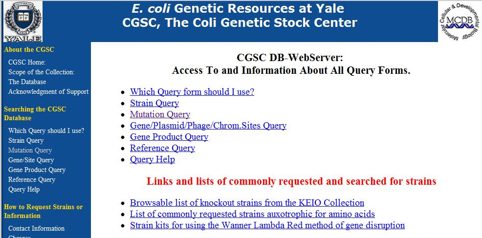
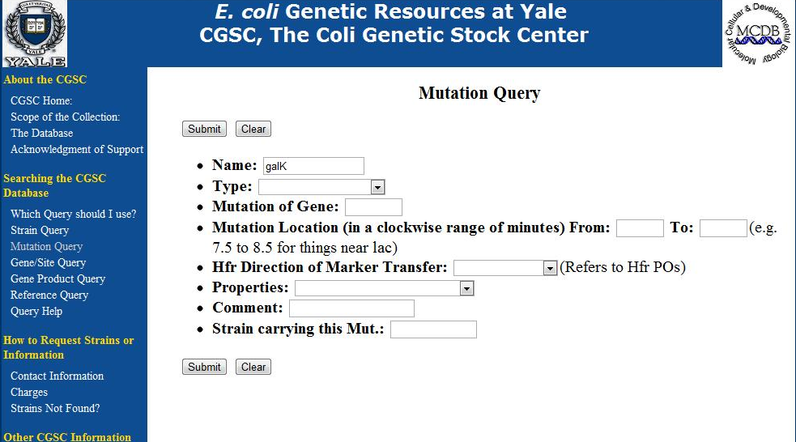
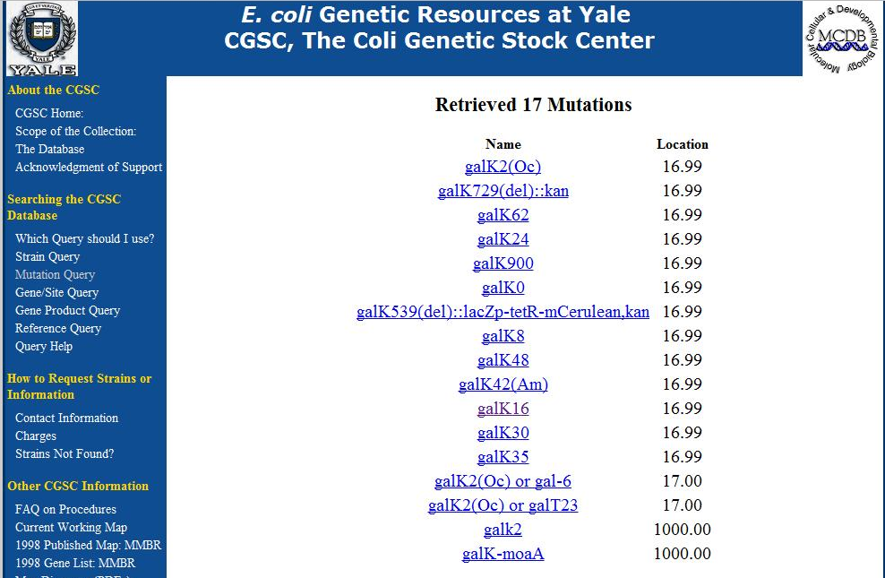
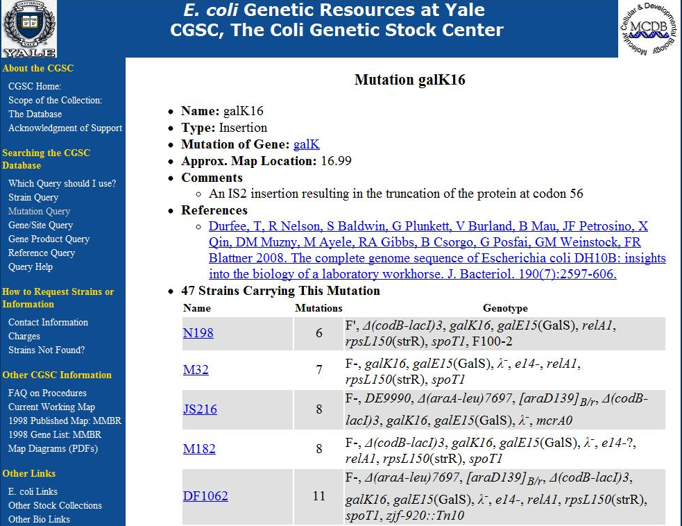
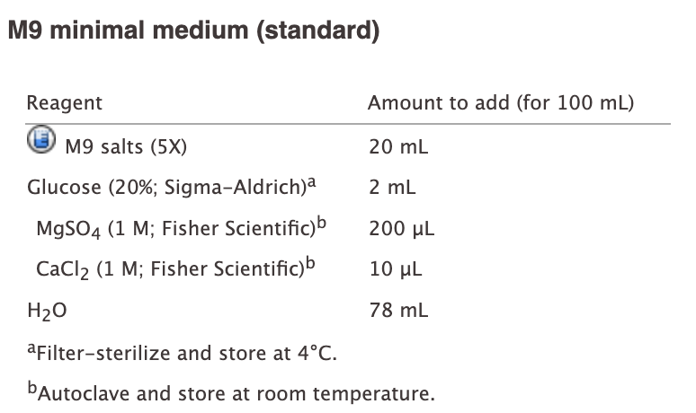
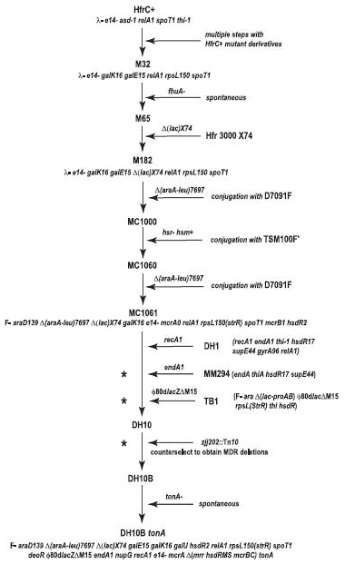
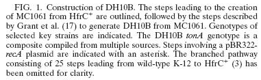
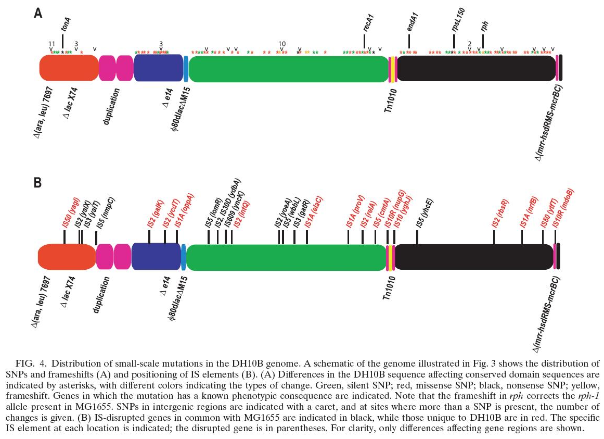

Genotypes
The shorthand for what has been done to a strain, and what it cannot do any more
A strain is usually handed to you as a string of abbreviations. Learning to read one is the practical skill in this section. Section divider: Genotypes.The shorthand for what has been done to a strain, and what it cannot do any more
A strain is usually handed to you as a string of abbreviations. Learning to read one is the practical skill in this section. Section divider: Genotypes.DH10B
F− endA1 recA1 galE15 galK16 nupG rpsL ΔlacX74 Φ80lacZΔM15 araD139 Δ(ara,leu)7697 mcrA Δ(mrr-hsdRMS-mcrBC) λ−A strain is usually referred to by a genotype, which is shorthand for the genome modifications it carries relative to MG1655. That is the important part: a genotype is a list of differences from a reference, not a description of the strain. A long list of these is on OpenWetWare, and many more are catalogued at the Coli Genetic Stock Center. The genotype of DH10B written out in full, with links to the OpenWetWare genotype list and the Coli Genetic Stock Center.




DH10B — the DNA-handling mutations
F− endA1 recA1 galE15 galK16 nupG rpsL ΔlacX74 Φ80lacZΔM15 araD139 Δ(ara,leu)7697 mcrA Δ(mrr-hsdRMS-mcrBC) λ−
peptone — an enzymatic digest of animal protein, so: every amino acid, pre-made
yeast extract — the contents of yeast cells minus the walls, so: nucleotides, vitamins, cofactors
sodium chloride — osmotic balance, and no nutritional contribution at all
Glucose is the only carbon source
SCHNOPS — sulfur, carbon, hydrogen, nitrogen, oxygen, phosphorus. Everything a cell is made of has to arrive as one of these.

DH10B — the metabolic mutations
F− endA1 recA1 galE15 galK16 nupG rpsL ΔlacX74 Φ80lacZΔM15 araD139 Δ(ara,leu)7697 mcrA Δ(mrr-hsdRMS-mcrBC) λ−
So DH10B will not grow on minimal medium. Most lab strains will not.
The other kind of token refers to a metabolic defect, and the name is usually descriptive of the resulting phenotype. galE15 and galK16 are mutations in galE and galK that leave the strain unable to use galactose as a carbon source. araD is a defect in arabinose utilisation. And the delta-ara-leu mutation is a large deletion that starts in a cluster of arabinose catabolic genes and runs many kilobases to the leucine biosynthesis genes, so arabinose catabolism and leucine biosynthesis and several other processes in between are simply gone. Put those together and this strain cannot make its own leucine, which means it cannot grow on M9 at all. The DH10B genotype with the metabolic mutations picked out: galE15, galK16, araD139 and the ara-leu deletion, and what each removes. The consequence: DH10B will not grow on minimal medium.

A genotype is the best-known composition of a strain, inferred from the manipulations used to make it and the phenotypes that resulted. Very few have been verified by sequencing.
PMID: 18245285
Here is the thing to be careful about. A genotype represents the best-known composition of a strain, inferred from the manipulations used to generate it and the phenotypes that came out relative to MG1655. It is a historical record of what somebody meant to do. Very few genotypes have been checked against a genome sequence. A few have, and DH10B is one: its lineage is documented and its genome has been sequenced. The documented lineage of DH10B beside its published genome, with the caution that a genotype is the best-known composition of a strain inferred from its construction and phenotypes, and that very few have been verified by sequencing.
PMID: 18245285
And when you compare the genome sequence to the genotype, you find a great many mutations that the genotype does not account for. Most of them presumably have no phenotypic consequence and can be ignored. But it is not at all uncommon to find that a strain carries an unlisted mutation that affects a process you care about, and you will not find it by reading the genotype, because it is not in there. A comparison of the sequenced DH10B genome against its written genotype, showing the many mutations the genotype does not account for.I tried to grow E. coli strain JM109 in minimal medium. Why didn’t it grow? What do I need to do to make it grow?
endA1 recA1 gyrA96 thi hsdR17 (rk–, mk+) relA1 supE44 Δ(lac-proAB) [F′ traD36, proAB, laqIqZΔM15]
It is thi. The strain cannot make thiamine — and proAB is deleted but restored on the F′, so that one is covered. Add thiamine.
The thi mutation will require thiamine. The proAB is knocked out but restored on an F plasmid. The other mutations are not related to metabolism. So it should just be thiamine. A question for the room, marked with the deck's thinking figure: why did JM109 not grow in minimal medium, and what is needed to make it grow? The genotype is printed below. The answer arrives on a click.I tried streaking strain WM3064 on an LB agar plate, but got no colonies. What do I need to do to make it grow?
thrB1004 pro thi rpsL hsdS lacZΔM15 RP4-1360 Δ(araBAD)567 ΔdapA1341::[erm pir]
ΔdapA — it cannot make diaminopimelate, and LB does not supply it. Add DAP. That auxotrophy is deliberate: it is how you kill the donor after a conjugation.
Need to add diaminopimelic acid. And it is worth connecting this back: WM3064 is the conjugation donor from the Genome Editing lecture, and the DAP auxotrophy is exactly what lets you counter-select the donor after mating. A second question: why did WM3064 not grow on LB, and what is needed? The genotype is printed below with the dapA deletion picked out. The answer arrives on a click.